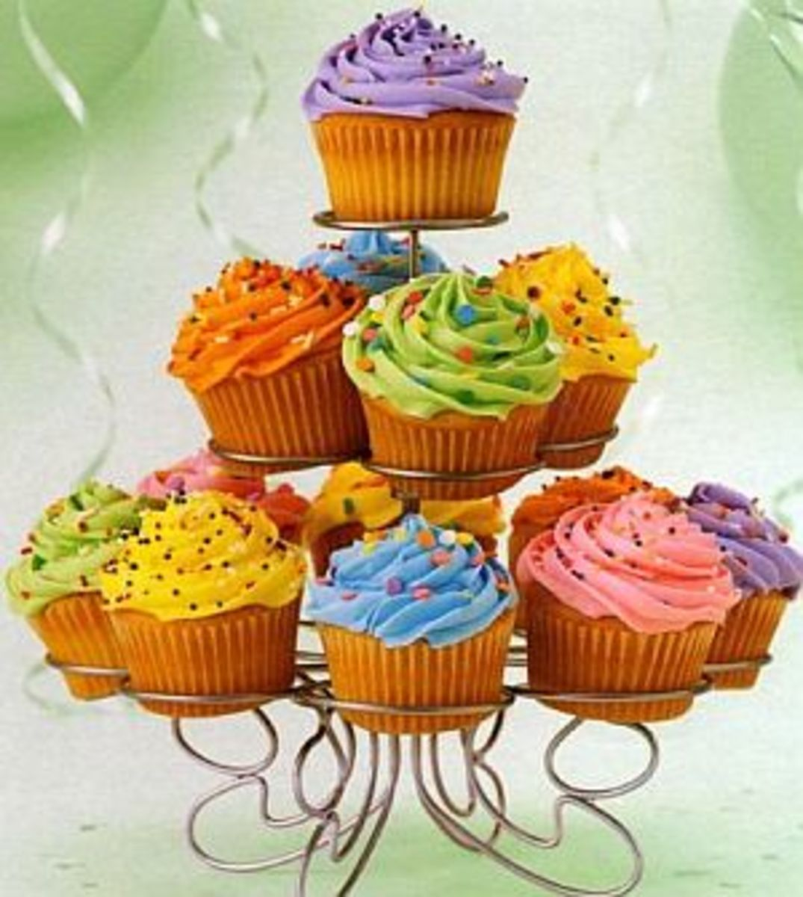

Cupcakes are generally baked in muffin pans that are lined with baking paper. They are small in size and are usually frosted and decorated. The best thing about cupcakes is that you can be as basic or as unique as you want with them.Cupcakes are generally baked in muffin pans that are lined with baking paper. They are small in size and are usually frosted and decorated. The best thing about cupcakes is that you can be as basic or as unique as you want with them.Cupcakes are generally baked in muffin pans that are lined with baking paper. They are small in size and are usually frosted and decorated. The best thing about cupcakes is that you can be as basic or as unique as you want with them.
